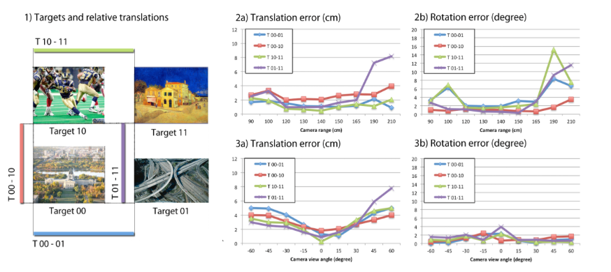
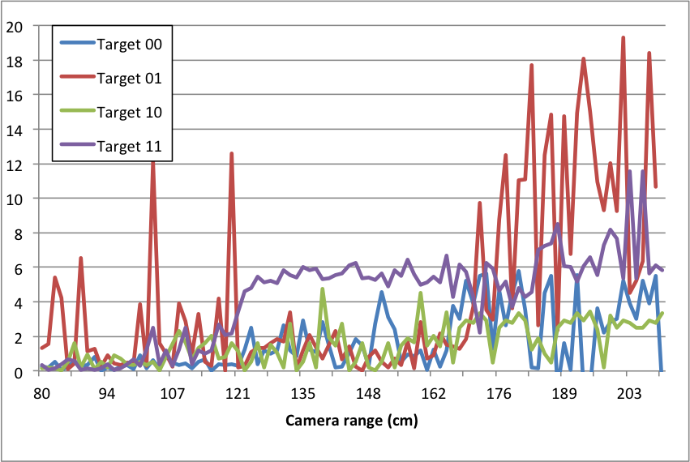
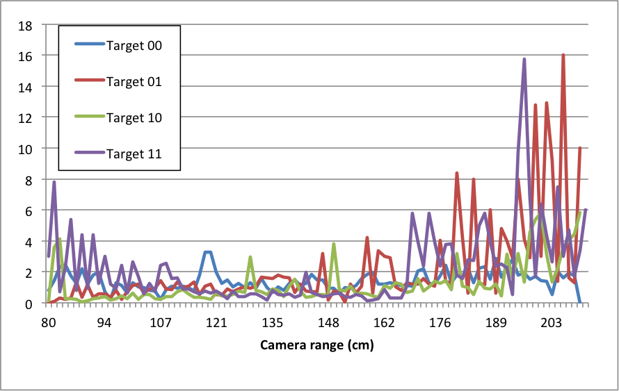
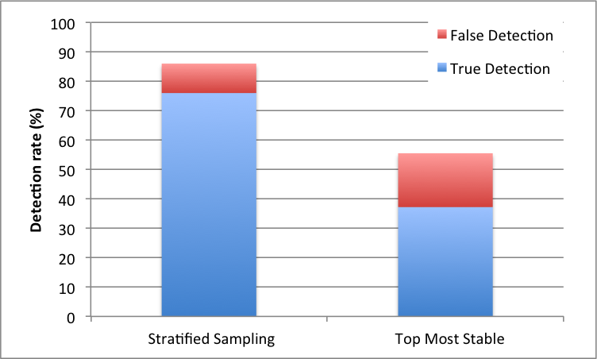
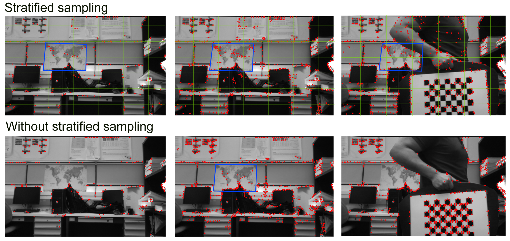
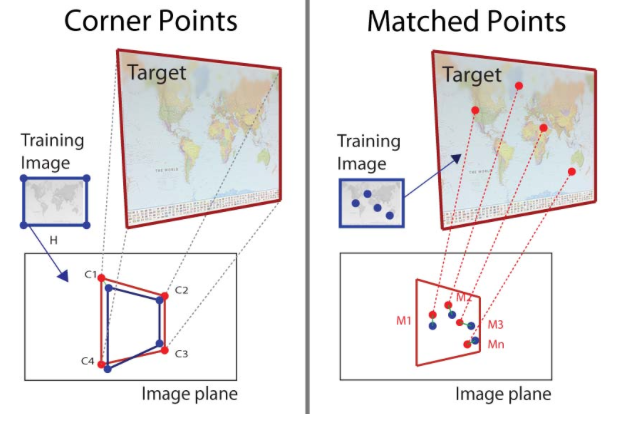
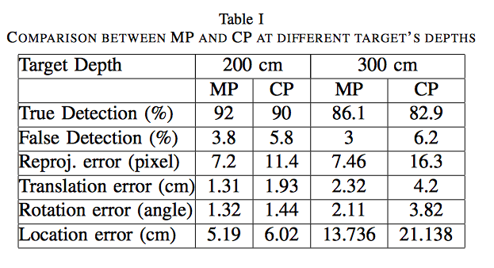
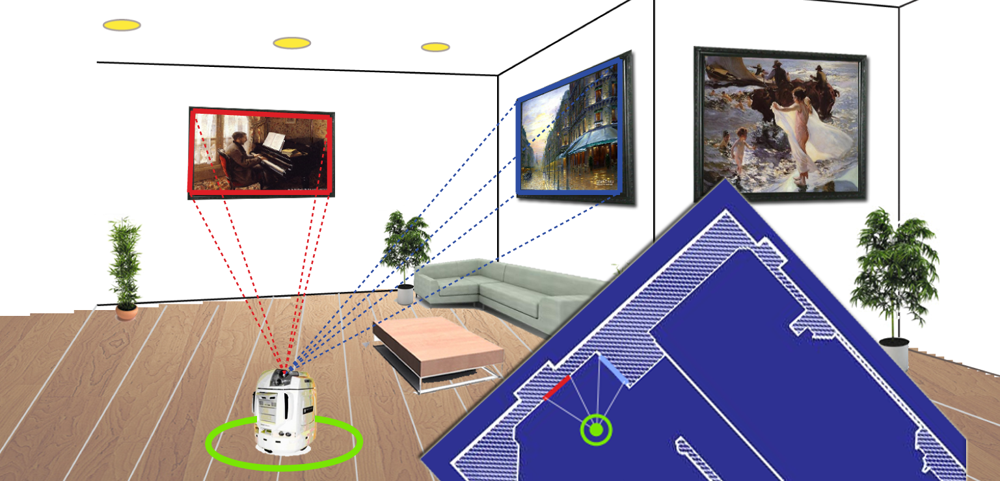

We present a framework for vision based robot localization using natural planar landmarks. Specifically, we demonstrate our framework with planar targets using Fern classifiers that have been shown to be robust against illumination changes, perspective distortion, motion blur, and occlusions. We add stratified sampling in the image plane to increase robustness of the localization scheme in cluttered environments and on-line checking for false detection of targets to decrease false positives. We use all matching points to improve pose estimation and an off-line target evaluation strategy to improve a priori map building. We report experiments demonstrating the accuracy and speed of localization. Our experiments entail synthetic and real data. Our framework and our improvements are however more general and the Fern classifier could be replaced by other techniques.
The target evaluation process consists of two steps. First, we train the system using one fronto-parallel image of the target. The feature database is created using the Fern classifier of the most stable feature points of the target image. Once the learning process has finished, we use the information of the camera to project the target from different cameras views by setting the distance from the camera to the target and rotating around the targets center. The background of the generated image is filled with random noise and blur. Then, for each generated frame we evaluate the target according to detection rate, re-projection error, pose estimation and camera location, just as in our synthetic data simulation. These values serve as a prediction of the quality of the target, i.e., an indication of the accuracy to expect when the particular target would be employed for robot localization.
We validated our framework by analyzing the impact of each technique applied to the main scheme. The framework was tested using real scenarios and empirical evaluations. For the real data experiment we placed four targets and positioned the camera pointing towards their center at different ranges and view angles. Accurate ground truth for the pose of the camera is not available to us, therefore we evaluate the accuracy in terms of quantities that can be precisely measured. We place multiple targets at precisely known relative position and orientation from each other. We estimate the pose of the camera between two or more targets and then we calculate the difference between those poses. In a common coordinate system, the difference of the poses will be exactly the spatial transformation between the targets.
For empirical evaluations we render images by projecting the target into an image plane from different angles and depths. We use the camera’s intrinsic parameters obtained in the calibration of the real camera through the camera module of our implementation. We use the synthetic images to test for planar target detection accuracy and the subsequent pose estimation. In the synthetic images we know the exact projection of the target given the orientation and position of the camera.
 Figure 1. Experimental evaluation of our framework using Fern classifier resulted in an average translation and rotation error of 2.7cm and 2.5 degrees in ranges from 1 to 3 meters. We compared the relative translations and rotations between the four targets while moving the camera freely.
  Figure 2. Empirical target evaluation of the four targets used in Figure 1. Translation and rotation error show the instability of Target 01 and Target 11 compared with the other two. In the experiment, we simulate the movement of the camera in front of the target from 0.8 m to 2.1 m. The average translation error for the complete set is 2.85 cm and 1.45◦ of average rotation error.
 Figure 3. Improved true detection rate of the system by including stratified sampling into the framework scheme while decreasing false detection.
 Figure 4. Example of planar target detection when the target is not the main component in the view. Top row shows the stratified sampling approach.
 Figure 5. The use of matching points improved the accuracy of localization up to 50% compared to only using the target corners.
 Table 1. Comparision results between matching points (MP) and corners points (CP) at 2 and 3 meters of distance from the target.

We gratefully acknowledge the financial support from the Natural Sciences and Engineering Research Council of Canada (NSERC) and from Cohort Systems Inc.
@inproceedings{ solisetal2012framework,
title=Framework for natural landmark-based robot localization,
author=Andrés Solís Montero, Hicham Sekkati, Jochen Lang, Robert Lagani{ère, Jeremy James},
booktitle=IEEE Ninth Conference on Computer and Robot Vision (CRV) ,
pages=131-138,
year=2012,
}